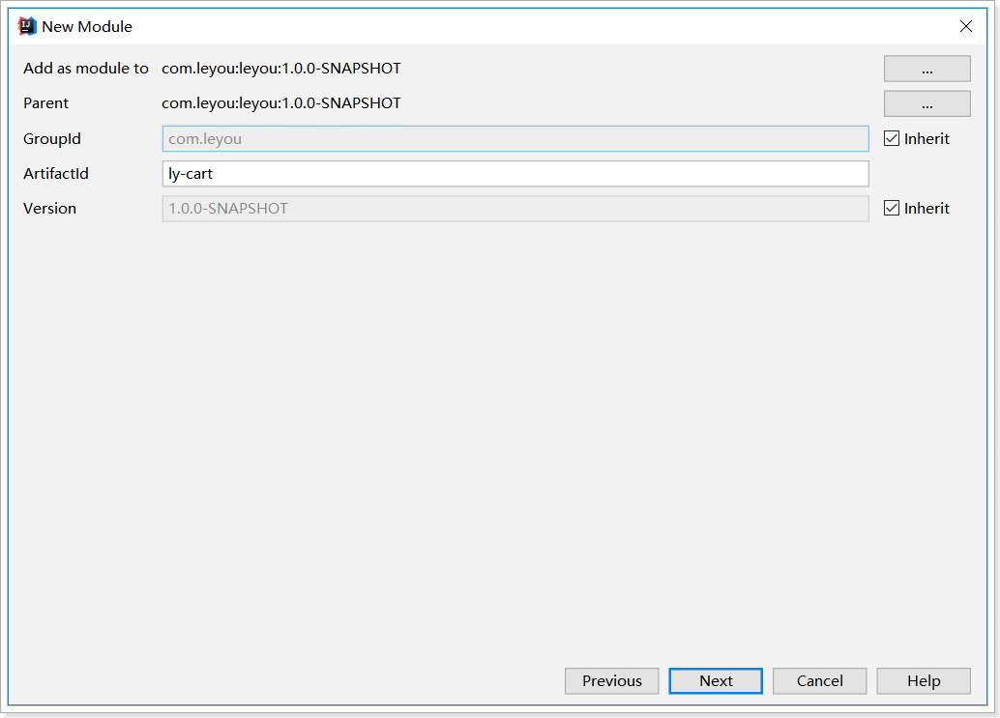
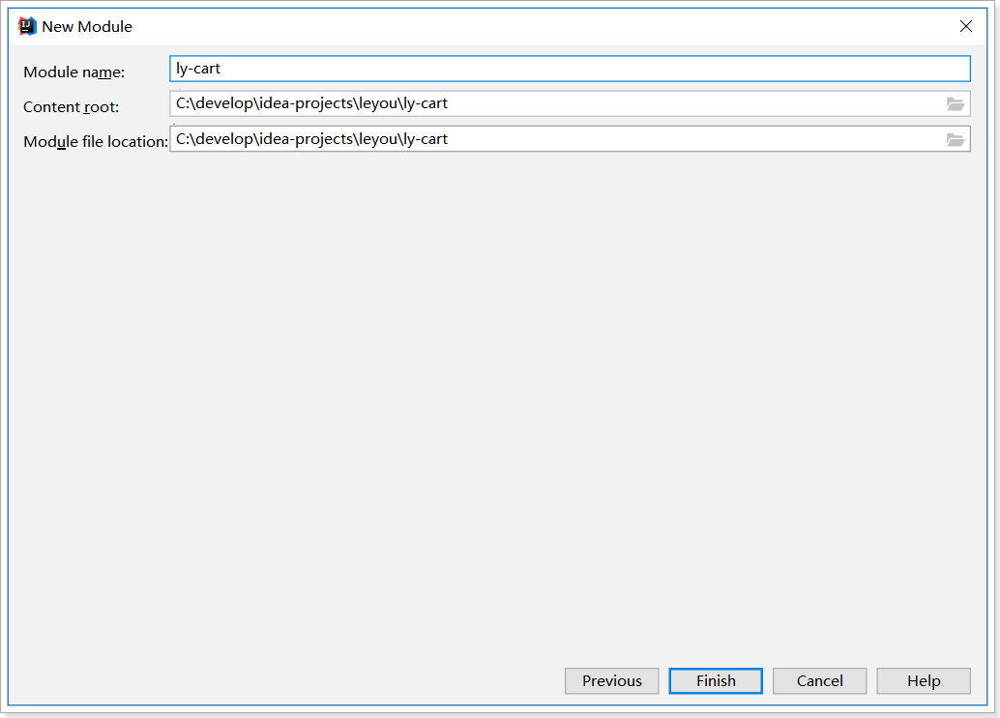
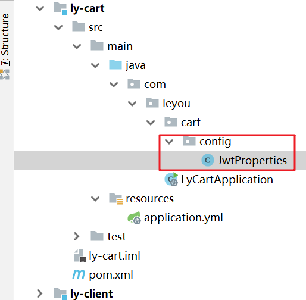
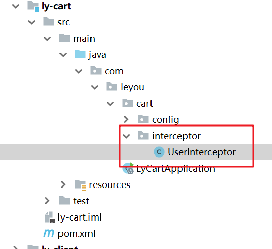
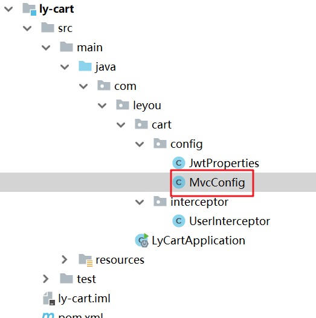
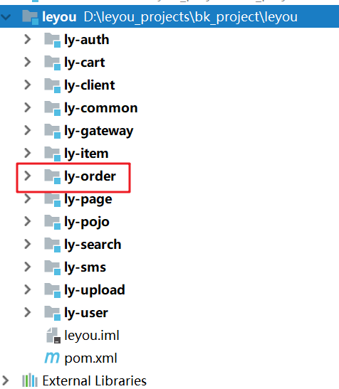
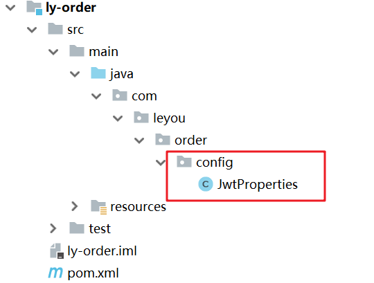
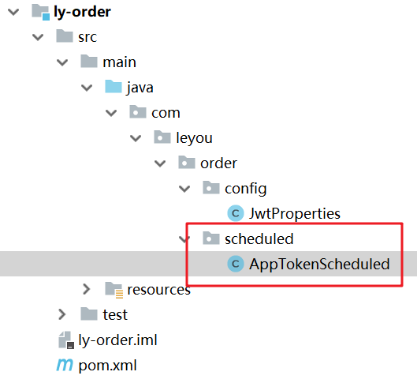

01、课程目标
实现已登录下购物车功能
独立搭建订单微服务
02、未登录购物车：选中商品
在页面中，每个购物车商品左侧，都有一个复选框，用户可以选择部分商品进行下单，而不一定是全部：

我们定义一个变量，记录所有被选中的商品：

选中一个
我们给商品前面的复选框与selected绑定，并且指定其值为当前购物车商品：

初始化全选
我们在加载完成购物车查询后，初始化全选：

总价格
然后编写一个计算属性，计算出选中商品总价格：
computed:{
//计算总价格
//数组的reduce()方法：
/**
* 参数一： 一个函数（使用箭头函数）代表运算逻辑
* 函数的两个参数
* c1: 用于存储累计的结果
* c2: 当前需要运算的元素
* 参数二： 默认值
*/
totalPrice(){
return this.selected.reduce((c1,c2)=>c1+c2.price*c2.num,0);
}
},在页面中展示总价格：

效果：

03、已登录购物车：搭建购物车微服务
接下来，我们完成已登录购物车。
在刚才的未登录购物车编写时，我们已经预留好了编写代码的位置，逻辑也基本一致。
首先，我们需要创建独立微服务，实现后台购物车功能。
1）创建module
 2）pom依赖
<?xml version="1.0" encoding="UTF-8"?>
<project xmlns="http://maven.apache.org/POM/4.0.0"
xmlns:xsi="http://www.w3.org/2001/XMLSchema-instance"
xsi:schemaLocation="http://maven.apache.org/POM/4.0.0 http://maven.apache.org/xsd/maven-4.0.0.xsd">
<parent>
<artifactId>leyou</artifactId>
<groupId>com.leyou</groupId>
<version>1.0-SNAPSHOT</version>
</parent>
<modelVersion>4.0.0</modelVersion>
<artifactId>ly-cart</artifactId>
<dependencies>
<dependency>
<groupId>com.alibaba.cloud</groupId>
<artifactId>spring-cloud-starter-alibaba-nacos-discovery</artifactId>
<version>2.1.0.RELEASE</version>
</dependency>
<dependency>
<groupId>org.springframework.boot</groupId>
<artifactId>spring-boot-starter-web</artifactId>
</dependency>
<dependency>
<groupId>org.springframework.boot</groupId>
<artifactId>spring-boot-starter-data-redis</artifactId>
</dependency>
<dependency>
<groupId>com.leyou</groupId>
<artifactId>ly-common</artifactId>
<version>1.0-SNAPSHOT</version>
</dependency>
</dependencies>
<build>
<plugins>
<plugin>
<groupId>org.springframework.boot</groupId>
<artifactId>spring-boot-maven-plugin</artifactId>
</plugin>
</plugins>
</build>
</project>3）配置文件
server:
port: 8088
spring:
application:
name: cart-service
cloud:
nacos:
discovery:
server-addr: 127.0.0.1:8848
redis:
host: 127.0.0.14）启动类
@SpringBootApplication
@EnableDiscoveryClient
public class LyCartApplication {
public static void main(String[] args) {
SpringApplication.run(LyCartApplication.class, args);
}
}5）网关路由
在ly-gateway中添加路由：

6）项目结构

04、已登录购物车：获取登录用户信息
需求
要实现已登录的购物车，必须要在购物车微服务获取当前登录用户用户信息
思路分析：
1）购物车微服务首先需要进行微服务间校验
2）通过了微服务间校验后，还需要进行用户认证校验，因为已登录购物车需要登录才可以访问
3）通过前面的所有校验后，我们可以从用户认证token取出UserInfo
4）把UserInfo存入ThreadLocal中

5）在购物车微服务的当次请求中随时可以从ThreadLocal获取UserInfo

1）配置公钥
ly:
jwt:
pubKeyPath: D:\leyou_projects\bk_project\soft\rsa\rsa-key.pub # 公钥地址
cookie:
cookieName: LY_TOKEN # cookie名称
app:
serviceName: cart-service
secret: cart-service2）配置读取类

代码：
package com.leyou.cart.config;
import com.leyou.common.auth.utils.RsaUtils;
import lombok.Data;
import org.springframework.boot.context.properties.ConfigurationProperties;
import org.springframework.stereotype.Component;
import javax.annotation.PostConstruct;
import java.security.PublicKey;
/**
* 读取Jwt相关配置
*/
@Data
@Component
@ConfigurationProperties(prefix = "ly.jwt")
public class JwtProperties {
private String pubKeyPath;//公钥路径
private PublicKey publicKey;//公钥
private CookiePojo cookie = new CookiePojo();
private AppTokenPojo app = new AppTokenPojo();
@Data
public class CookiePojo{
private String cookieName;
}
@Data
public class AppTokenPojo{
private String serviceName;
private String secret;
}
/**
* 读取公钥
*/
@PostConstruct
public void initMethod() throws Exception {
publicKey = RsaUtils.getPublicKey(pubKeyPath);
}
}
3）设计UserHolder工具类
为了方便操作ThreadLocal数据，我们设计一个工具类
package com.leyou.common.auth.pojo;
/**
* 用于从ThreadLocal对象中存取数据的工具
*/
public class UserHolder {
private static ThreadLocal<UserInfo> threadLocal = new ThreadLocal<>();
/**
* 存入数据到ThreadLocal
*/
public static void setUser(UserInfo userInfo){
threadLocal.set(userInfo);
}
/**
* 从ThreadLocal取出对象
*/
public static UserInfo getUser(){
return threadLocal.get();
}
/**
* 删除数据
*/
public static void removeUser(){
threadLocal.remove();
}
}
4）编写拦截器
把之前编写服务token拦截器拷贝过来

接着，我们在购物车微服务编写拦截器，进行相关校验，并获取UserInfo，调用UserHolder工具类存入ThreadLocal。

代码：
package com.leyou.cart.interceptor;
import com.leyou.cart.config.JwtProperties;
import com.leyou.common.auth.utils.JwtUtils;
import com.leyou.common.auth.utils.Payload;
import com.leyou.common.auth.utils.UserHolder;
import com.leyou.common.auth.utils.UserInfo;
import com.leyou.common.utils.CookieUtils;
import lombok.extern.slf4j.Slf4j;
import org.springframework.beans.factory.annotation.Autowired;
import org.springframework.stereotype.Component;
import org.springframework.web.servlet.HandlerInterceptor;
import javax.servlet.http.HttpServletRequest;
import javax.servlet.http.HttpServletResponse;
/**
* 获取登录用户信息
*/
@Component
@Slf4j
public class UserTokenInterceptor implements HandlerInterceptor {
@Autowired
private JwtProperties jwtProps;
@Override
public boolean preHandle(HttpServletRequest request, HttpServletResponse response, Object handler) throws Exception {
//1.取出用户token
String userToken = CookieUtils.getCookieValue(request,jwtProps.getCookie().getCookieName());
//2.验证用户token合法性
Payload<UserInfo> payload = null;
try {
payload = JwtUtils.getInfoFromToken(userToken, jwtProps.getPublicKey(), UserInfo.class);
} catch (Exception e) {
log.warn("【用户鉴权】该用户未登录");
return false;
}
//3.取出UserInfo数据
UserInfo userInfo = payload.getInfo();
//4.存入ThreadLocal
UserHolder.setUser(userInfo);
return true;
}
}
注意：
- 这里我们使用了
ThreadLocal来存储查询到的用户信息，线程内共享，因此请求到达Controller后可以共享User - 使用
UserHolder.setUser方法存入ThreadLocal，使用UserHolder.getUser方法从ThreadLocal取出
5）配置拦截器
配置SpringMVC，使过滤器生效：

package com.leyou.cart.config;
import com.leyou.cart.interceptor.UserTokenInterceptor;
import org.springframework.beans.factory.annotation.Autowired;
import org.springframework.context.annotation.Configuration;
import org.springframework.web.servlet.config.annotation.InterceptorRegistry;
import org.springframework.web.servlet.config.annotation.WebMvcConfigurer;
/**
* MVC环境配置类
*/
@Configuration
public class MvcConfig implements WebMvcConfigurer{
@Autowired
private UserTokenInterceptor userTokenInterceptor;
/**
* 添加拦截器
*/
@Override
public void addInterceptors(InterceptorRegistry registry) {
/**
* excludePathPatterns(): 排除拦截路径
*/
registry.addInterceptor(userTokenInterceptor);
}
}
05、已登录购物车：后台购物车数据结构设计
1）设计思路
当用户登录时，我们需要把购物车数据保存到后台，可以选择保存在数据库。但是购物车是一个读写频率很高的数据。因此我们这里选择读写效率比较高的Redis作为购物车存储。
Redis有5种不同数据结构，这里选择哪一种比较合适呢？Map<String, List
- 首先不同用户应该有独立的购物车，因此购物车应该以用户的作为key来存储，Value是用户的所有购物车信息。这样看来基本的
k-v结构就可以了。 - 但是，我们对购物车中的商品进行增、删、改操作，基本都需要根据商品id进行判断，为了方便后期处理，我们的购物车也应该是
k-v结构，key是商品id，value才是这个商品的购物车信息。
综上所述，我们的购物车结构是一个双层Map：Map<String,Map<String,Cart>>
- 第一层Map，Key是用户id
- 第二层Map，Key是购物车中商品id，值是购物车数据
这种双层Map结构，对应redis就是hash类型的结构。
2）购物车实体类
package com.leyou.cart.pojo;
import lombok.Data;
/**
* 购物车实体
*/
@Data
public class Cart {
private Long skuId;// 商品id
private String title;// 标题
private String image;// 图片
private Long price;// 加入购物车时的价格
private Integer num;// 购买数量
private String ownSpec;// 商品规格参数
}06、已登录购物车：添加商品到购物车
1）页面发起请求
已登录情况下，向后台添加购物车：
ly-page项目的item.html
//添加购物车
addCart(){
//判断当前用户是否登录
ly.http.get('/auth/verify').then(resp=>{
//已经登录
ly.http.post('/cart',{
"skuId":this.selectedSku.id,
"title":this.selectedSku.title,
"image":this.images[0],
"price":this.selectedSku.price,
"num":this.num,
"ownSpec":this.selectedSku.ownSpec
}).then(resp=>{
//跳转到购物车列表页面
window.location.href="http://www.leyou.com/cart.html";
}).catch(e=>{
console.log('添加购物车失败');
});
}).catch(e=>{
//未登录
//判断当前商品是否已经存在于购物车列表中
//1.取出当前购物车列表
let carts = ly.store.get('LY_CART') || [];
//2.判断skuId是否相等
let cart = carts.find(cart=>cart.skuId==this.selectedSku.id);
if(cart){
//如果存在，则数量增加
cart.num += this.num;
}else{
//如果不存在，则把当前商品数据添加到购物车列表
carts.push({
"skuId":this.selectedSku.id,
"title":this.selectedSku.title,
"image":this.images[0],
"price":this.selectedSku.price,
"num":this.num,
"ownSpec":this.selectedSku.ownSpec
});
}
//把更新后carts数据设置到localStorage
ly.store.set('LY_CART',carts);
//3.跳转到购物车列表页面
window.location.href="http://www.leyou.com/cart.html";
});
}, 
这里发起的是Json请求。那么我们后台也要以json接收。
2）编写CartController
先分析一下：
请求方式：新增，肯定是Post
- 请求路径：/cart ，这个其实是Zuul路由的路径，我们可以不管
- 请求参数：Json对象，包含购物车的所有属性，我们可以用购物车对象接收
- 返回结果：无
package com.leyou.cart.controller;
import com.leyou.cart.pojo.Cart;
import com.leyou.cart.service.CartService;
import org.springframework.beans.factory.annotation.Autowired;
import org.springframework.http.HttpStatus;
import org.springframework.http.ResponseEntity;
import org.springframework.web.bind.annotation.PostMapping;
import org.springframework.web.bind.annotation.RequestBody;
import org.springframework.web.bind.annotation.RestController;
/**
* 购物车
*/
@RestController
public class CartController {
@Autowired
private CartService cartService;
/**
* 添加购物车
*/
@PostMapping("/")
public ResponseEntity<Void> addCart(@RequestBody Cart cart){
cartService.addCart(cart);
return ResponseEntity.status(HttpStatus.CREATED).build();
}
}
3）编写CartService
这里我们不访问数据库，而是直接操作Redis。基本思路：
先查询之前的购物车数据
判断要添加的商品是否存在
- 存在：则直接修改数量后写回Redis
- 不存在：新建一条数据，然后写入Redis
在ly-common中提供购物车id的前缀
package com.leyou.common.constant;
public class LyConstants {
……
/*用户购物车对象在redis中的key的前缀*/
public static final String CART_PRE = "CART_PRE";
}代码：
package com.leyou.cart.service;
import com.leyou.cart.pojo.Cart;
import com.leyou.common.auth.utils.UserHolder;
import com.leyou.common.auth.utils.UserInfo;
import com.leyou.common.constants.LyConstants;
import com.leyou.common.utils.JsonUtils;
import org.springframework.beans.factory.annotation.Autowired;
import org.springframework.data.redis.core.BoundHashOperations;
import org.springframework.data.redis.core.StringRedisTemplate;
import org.springframework.stereotype.Service;
@Service
public class CartService {
@Autowired
private StringRedisTemplate redisTemplate;
public void addCart(Cart cart) {
//1.获取当前登录用户的购物车（Map<skuId字符串,Cart的json字符串>）
BoundHashOperations<String, Object, Object> boundHashOps= getLoginUserCart();
//2.判断当前商品是否已经添加
String skuId = cart.getSkuId().toString();
if(boundHashOps.hasKey(skuId)){
//2.1 已经添加，只修改数量
//数量=原购物车中数量+现在的数量
//1)获取原来的购物车对象
String cartJson = (String)boundHashOps.get(skuId);
//2）转换为Cart对象
Cart oldCart = JsonUtils.toBean(cartJson,Cart.class);
//3）修改数量
cart.setNum(oldCart.getNum()+cart.getNum());
}
//2.2.没有添加，添加商品到我的购物车
boundHashOps.put(skuId, JsonUtils.toString(cart));
}
/**
* 获取当前登录用户的购物车
*/
public BoundHashOperations<String, Object, Object> getLoginUserCart(){
//1.取出当前登录用户的购物车数据
UserInfo user = UserHolder.getUser();
String userId = user.getId().toString();
/**
* BoundHashOperations: redis的value值（Map<skuId字符串,Cart的json字符串>）
*/
BoundHashOperations<String, Object, Object> boundHashOps = redisTemplate.boundHashOps(LyConstants.CART_PRE+userId);
return boundHashOps;
}
}
4）测试并查看结果

07、已登录购物车：查询购物车
1）页面发起请求
购物车页面：cart.html
//加载购物车
loadCarts(){
//判断用户是否登录
ly.http.get('/auth/verify').then(resp=>{
//已经登录
ly.http.get('/cart/list').then(resp=>{
this.carts = resp.data;
//默认全选
this.selected = this.carts;
}).catch(e=>{
console.log('查询购物车失败');
})
}).catch(e=>{
//未登录
//从本地缓存取出购物车数据，并赋值给carts
this.carts = ly.store.get('LY_CART');
this.selected = this.carts;
})
},2）后台实现
CartController
/**
* 查询购物车
*/
@GetMapping("/list")
public ResponseEntity<List<Cart>> findCarts(){
List<Cart> carts = cartService.findCarts();
return ResponseEntity.ok(carts);
}
CartService
public List<Cart> findCarts() {
//1.获取用户的购物车
BoundHashOperations<String, Object, Object> boundHashOps = getLoginUserCart();
//2.取出BoundHashOperations的value值
return boundHashOps.values()
.stream()
.map(cart -> JsonUtils.toBean((String) cart, Cart.class))
.collect(Collectors.toList());
}3）测试

08、已登录购物车：修改商品数量
1）页面发起请求
//添加数量
increment(cart){
cart.num++;
//判断用户是否登录
ly.http.get('/auth/verify').then(resp=>{
//已经登录
this.updateCart(cart.skuId,cart.num);
}).catch(e=>{
//未登录
ly.store.set('LY_CART',this.carts);
})
},
//减少数量
decrement(cart){
if(cart.num<=1){
return;
}
cart.num--;
//判断用户是否登录
ly.http.get('/auth/verify').then(resp=>{
//已经登录
this.updateCart(cart.skuId,cart.num);
}).catch(e=>{
//未登录
ly.store.set('LY_CART',this.carts);
})
},
//修改后台商品数量
updateCart(skuId,num){
ly.http.put('/cart/?skuId='+skuId+"&num="+num).then(resp=>{
}).catch(e=>{
console.log('更新数量失败');
})
},2）后台实现
CartController
/**
* 更新商品数量
*/
@PutMapping("/")
public ResponseEntity<Void> updateNum(@RequestParam("skuId") Long skuId,@RequestParam("num") Integer num){
cartService.updateNum(skuId,num);
return ResponseEntity.status(HttpStatus.NO_CONTENT).build();
}CartService
public void updateNum(Long skuId, Integer num) {
//1.获取用户的购物车
BoundHashOperations<String, Object, Object> boundHashOps = getLoginUserCart();
//2.取出购物车中的指定商品
String cartJson = (String)boundHashOps.get(skuId.toString());
//3.转换为Cart对象
Cart cart = JsonUtils.toBean(cartJson, Cart.class);
//4.修改数量
cart.setNum(num);
//5.把更新的数据存回用户的购物车
boundHashOps.put(skuId.toString(),JsonUtils.toString(cart));
}09、已登录购物车：删除购物车商品
1）页面发起请求
//删除购物车
delCart(i){
ly.http.get('/auth/verify').then(resp=>{
//已经登录
ly.http.delete('/cart/?skuId='+this.carts[i].skuId).then(resp=>{
//把页面元素删除即可
this.carts.splice(i,1);
}).catch(e=>{
console.log('删除购物车商品失败');
})
}).catch(e=>{
//未登录
//删除carts数组中的i下标的元素
/**
* splice()：删除数组元素 [10,43,87,45] 1,1 [10,87,45]
* 参数一：需要删除元素的开始下标位置
* 参数二：需要删除元素个数
*/
this.carts.splice(i,1);
//更新到缓存中
ly.store.set('LY_CART',this.carts);
})
}注意：后台成功响应后，要把页面的购物车中数据也删除
2）后台实现
CartController
/**
* 删除购物车商品
*/
@DeleteMapping("/")
public ResponseEntity<Void> deleteCart(@RequestParam("skuId") Long skuId){
cartService.deleteCart(skuId);
return ResponseEntity.status(HttpStatus.NO_CONTENT).build();
}CartService
public void deleteCart(Long skuId) {
//1.获取用户的购物车
BoundHashOperations<String, Object, Object> boundHashOps = getLoginUserCart();
//2.从购物车中删除指定商品
boundHashOps.delete(skuId.toString());
}10、已登录购物车：登录后购物车合并
用户登录后，如果未登录下添加有购物车，则需要把未登录的购物车数据添加到已登录购物车列表中。
1）思路分析
基本流程如下：
- 当跳转到购物车页面，查询购物车列表前，需要判断用户登录状态
- 如果登录：
- 首先检查用户的LocalStorage中是否有购物车信息，
- 如果有，则提交到后台保存，
- 清空LocalStorage
- 如果未登录，直接查询即可
2）前端页面
需要把提前写好的合并购物车的逻辑放开，并注释掉之前查询的逻辑。如图所示：
//加载购物车
loadCarts(){
//判断用户是否登录
ly.http.get('/auth/verify').then(resp=>{
//已经登录
//判断本地购物车是否存在商品
let carts = ly.store.get('LY_CART') || [];
//如果存在商品，则添加到redis中
if(carts && carts.length>0){
//提交本地购物车数据到后台
ly.http.post('/cart/list',carts).then(resp=>{
//清空本地购物车数据
ly.store.del('LY_CART');
//重新查询redis数据库
this.loadLoginCarts();
}).catch(e=>{
console.log('合并购物车失败');
})
}else{
//如果没有商品，直接查询redis即可
this.loadLoginCarts();
}
}).catch(e=>{
//未登录
//从本地缓存取出购物车数据，并赋值给carts
this.carts = ly.store.get('LY_CART');
this.selected = this.carts;
})
},
//加载后台购物车
loadLoginCarts(){
ly.http.get('/cart/list').then(resp=>{
this.carts = resp.data;
//默认全选
this.selected = this.carts;
}).catch(e=>{
console.log('查询购物车失败');
})
},3）批量新增购物车
刷新页面，可以看到请求已经发出：

3.1.CartController
分析一下请求：
- 请求方式：POST
- 请求路径：/cart/list
- 请求参数：json数组，里面是cart对象
- 返回结果，应该是void
代码：
/**
* 合并本地购物车数据
*/
@PostMapping("/list")
public ResponseEntity<Void> mergeCarts(@RequestBody List<Cart> carts){
cartService.mergeCarts(carts);
return ResponseEntity.status(HttpStatus.CREATED).build();
}3.2.CartService
批量新增，其实就是循环把集合中的每个购物车商品添加到redis。因此这里可以调用之前 单商品新增的逻辑。
代码：
public void mergeCarts(List<Cart> carts) {
carts.forEach(cart -> {
addCart(cart);
});
}11、订单业务：订单数据提交
1）购物车结算
之前我们已经完成了购物车管理，我们可以选择最终需要购买的商品，然后点击结算，会跳转到订单结算页面getOrderInfo.html。
getOrderInfo.html页面的代码已经写好，我们看到该页面的钩子函数created方法中，需要从LocalStorage获取选中的购物车数据：

这样，我们必须在购物车页面点击结算的时候需要把选中的商品存入LocalStorage。
点击结算事件
cart.html点击结算按钮：

编写结算方法
//订单结算
toOrderInfo(){
//1.把选择的商品存入LocalStorage
ly.store.set('selectedCarts',this.selected);
//2.跳转到结算页面
window.location.href="http://www.leyou.com/getOrderInfo.html";
}效果

2）提交订单
我们点击如下的提交订单按钮，然后可以查询发起的请求携带了我们需要的参数：

订单请求已经发出，并且需要的参数都已经携带了：

注意：企业中任何下单的操作，都不能有价格数据，都必须经过后台查询。
12、订单业务：订单相关表结构说明
订单表：
CREATE TABLE `tb_order` (
`order_id` bigint(20) NOT NULL COMMENT '订单id',
`total_fee` bigint(20) NOT NULL COMMENT '总金额，单位为分',
`actual_fee` bigint(20) NOT NULL COMMENT '实付金额。单位:分。如:20007，表示:200元7分',
`promotion_ids` varchar(256) COLLATE utf8_bin DEFAULT '' COMMENT '优惠活动id，多个以，隔开',
`payment_type` tinyint(1) unsigned zerofill NOT NULL COMMENT '支付类型，1、在线支付，2、货到付款',
`post_fee` bigint(20) NOT NULL COMMENT '邮费。单位:分。如:20007，表示:200元7分',
`user_id` bigint(20) NOT NULL COMMENT '用户id',
`invoice_type` int(1) DEFAULT '0' COMMENT '发票类型(0无发票1普通发票，2电子发票，3增值税发票)',
`source_type` int(1) DEFAULT '2' COMMENT '订单来源：1:app端，2：pc端，3：微信端',
`status` tinyint(1) DEFAULT NULL COMMENT '订单的状态，1、未付款 2、已付款,未发货 3、已发货,未确认 4、确认收货，交易成功 5、交易取消，订单关闭 6、交易结束，已评价',
`create_time` timestamp NULL DEFAULT CURRENT_TIMESTAMP COMMENT '创建时间',
`pay_time` timestamp NULL DEFAULT NULL COMMENT '支付时间',
`consign_time` timestamp NULL DEFAULT NULL COMMENT '发货时间',
`end_time` timestamp NULL DEFAULT NULL COMMENT '交易完成时间',
`close_time` timestamp NULL DEFAULT NULL COMMENT '交易关闭时间',
`comment_time` timestamp NULL DEFAULT NULL COMMENT '评价时间',
`update_time` timestamp NULL DEFAULT CURRENT_TIMESTAMP ON UPDATE CURRENT_TIMESTAMP COMMENT '更新时间',
PRIMARY KEY (`order_id`),
KEY `buyer_nick` (`user_id`)
) ENGINE=InnoDB DEFAULT CHARSET=utf8 COLLATE=utf8_bin;物流信息表：
CREATE TABLE `tb_order_logistics` (
`order_id` bigint(20) NOT NULL COMMENT '订单id，与订单表一对一',
`logistics_number` varchar(18) DEFAULT '' COMMENT '物流单号',
`logistics_company` varchar(18) DEFAULT '' COMMENT '物流公司名称',
`addressee` varchar(32) NOT NULL COMMENT '收件人',
`phone` varchar(11) NOT NULL COMMENT '收件人手机号码',
`province` varchar(16) NOT NULL COMMENT '省',
`city` varchar(32) NOT NULL COMMENT '市',
`district` varchar(32) NOT NULL COMMENT '区',
`street` varchar(256) NOT NULL COMMENT '街道',
`postcode` int(6) DEFAULT '0' COMMENT '邮编',
`create_time` timestamp NULL DEFAULT CURRENT_TIMESTAMP COMMENT '创建时间',
`update_time` timestamp NULL DEFAULT CURRENT_TIMESTAMP ON UPDATE CURRENT_TIMESTAMP COMMENT '更新时间',
PRIMARY KEY (`order_id`)
) ENGINE=InnoDB DEFAULT CHARSET=utf8;订单条目：
CREATE TABLE `tb_order_detail` (
`id` bigint(20) NOT NULL COMMENT '订单详情id ',
`order_id` bigint(20) NOT NULL COMMENT '订单id',
`sku_id` bigint(20) NOT NULL COMMENT 'sku商品id',
`num` int(4) NOT NULL COMMENT '购买数量',
`title` varchar(256) NOT NULL COMMENT '商品标题',
`own_spec` varchar(1024) DEFAULT '' COMMENT '商品动态属性键值集',
`price` int(16) NOT NULL COMMENT '价格,单位：分',
`image` varchar(256) DEFAULT '' COMMENT '商品图片',
`create_time` timestamp NULL DEFAULT CURRENT_TIMESTAMP COMMENT '创建时间',
`update_time` timestamp NULL DEFAULT CURRENT_TIMESTAMP ON UPDATE CURRENT_TIMESTAMP COMMENT '更新时间',
PRIMARY KEY (`id`),
KEY `key_order_id` (`order_id`) USING BTREE
) ENGINE=InnoDB AUTO_INCREMENT=7 DEFAULT CHARSET=utf8 COMMENT='订单详情表';13、订单业务：搭建订单微服务
1）创建订单实体类模块

2）创建订单模块
创建ly-order订单模块

3）导入依赖
<?xml version="1.0" encoding="UTF-8"?>
<project xmlns="http://maven.apache.org/POM/4.0.0"
xmlns:xsi="http://www.w3.org/2001/XMLSchema-instance"
xsi:schemaLocation="http://maven.apache.org/POM/4.0.0 http://maven.apache.org/xsd/maven-4.0.0.xsd">
<parent>
<artifactId>leyou</artifactId>
<groupId>com.leyou</groupId>
<version>1.0-SNAPSHOT</version>
</parent>
<modelVersion>4.0.0</modelVersion>
<artifactId>ly-order</artifactId>
<dependencies>
<dependency>
<groupId>com.alibaba.cloud</groupId>
<artifactId>spring-cloud-starter-alibaba-nacos-discovery</artifactId>
<version>2.1.0.RELEASE</version>
</dependency>
<dependency>
<groupId>org.springframework.boot</groupId>
<artifactId>spring-boot-starter-web</artifactId>
</dependency>
<!-- mysql驱动 -->
<dependency>
<groupId>mysql</groupId>
<artifactId>mysql-connector-java</artifactId>
</dependency>
<!-- 通用Mapper启动器 -->
<dependency>
<groupId>com.baomidou</groupId>
<artifactId>mybatis-plus-boot-starter</artifactId>
<version>3.1.0</version>
</dependency>
<dependency>
<groupId>org.springframework.cloud</groupId>
<artifactId>spring-cloud-starter-openfeign</artifactId>
</dependency>
<dependency>
<groupId>com.leyou</groupId>
<artifactId>ly-client-item</artifactId>
<version>1.0-SNAPSHOT</version>
</dependency>
<dependency>
<groupId>com.leyou</groupId>
<artifactId>ly-client-user</artifactId>
<version>1.0-SNAPSHOT</version>
</dependency>
<dependency>
<groupId>com.leyou</groupId>
<artifactId>ly-pojo-order</artifactId>
<version>1.0-SNAPSHOT</version>
</dependency>
<dependency>
<groupId>com.leyou</groupId>
<artifactId>ly-client-auth</artifactId>
<version>1.0-SNAPSHOT</version>
</dependency>
<dependency>
<groupId>com.leyou</groupId>
<artifactId>ly-common</artifactId>
<version>1.0-SNAPSHOT</version>
</dependency>
<dependency>
<groupId>org.springframework.boot</groupId>
<artifactId>spring-boot-starter-data-redis</artifactId>
</dependency>
<dependency>
<groupId>org.springframework.boot</groupId>
<artifactId>spring-boot-starter-test</artifactId>
</dependency>
</dependencies>
<build>
<plugins>
<plugin>
<groupId>org.springframework.boot</groupId>
<artifactId>spring-boot-maven-plugin</artifactId>
</plugin>
</plugins>
</build>
</project>4）启动类
package com.leyou;
import org.mybatis.spring.annotation.MapperScan;
import org.springframework.boot.SpringApplication;
import org.springframework.boot.autoconfigure.SpringBootApplication;
import org.springframework.cloud.client.discovery.EnableDiscoveryClient;
import org.springframework.cloud.openfeign.EnableFeignClients;
import org.springframework.scheduling.annotation.EnableScheduling;
/**
* 订单微服务
*/
@SpringBootApplication
@EnableDiscoveryClient
@EnableFeignClients
@EnableScheduling
@MapperScan("com.leyou.order.mapper")
public class LyOrderApplication {
public static void main(String[] args) {
SpringApplication.run(LyOrderApplication.class,args);
}
}
5）配置文件
application.yml:
server:
port: 8089
spring:
application:
name: order-service
datasource:
driver-class-name: com.mysql.cj.jdbc.Driver
url: jdbc:mysql:///leyou?serverTimezone=UTC&characterEncoding=utf8&useUnicode=true&useSSL=true
username: root
password: root
cloud:
nacos:
discovery:
server-addr: 127.0.0.1:8848
redis:
host: 127.0.0.1
mybatis-plus:
type-aliases-package: com.leyou.order.pojo
configuration:
map-underscore-to-camel-case: true
mapper-locations: mappers/*.xml
logging:
level:
com.leyou: debug
ly:
jwt:
pubKeyPath: D:\leyou_projects\javaee137\software\rsa-key\rsa-key.pub # 公钥地址
cookie:
cookieName: LY_TOKEN # cookie名称
app:
serviceName: order-service
secret: order-service6）Jwt配置类

package com.leyou.order.config;
import com.leyou.common.auth.utils.RsaUtils;
import lombok.Data;
import org.springframework.boot.context.properties.ConfigurationProperties;
import org.springframework.stereotype.Component;
import javax.annotation.PostConstruct;
import java.security.PublicKey;
/**
* 读取Jwt相关配置
*/
@Data
@Component
@ConfigurationProperties(prefix = "ly.jwt")
public class JwtProperties {
private String pubKeyPath;//公钥路径
private PublicKey publicKey;//公钥
private CookiePojo cookie = new CookiePojo();
private AppTokenPojo app = new AppTokenPojo();
@Data
public class CookiePojo{
private String cookieName;
}
@Data
public class AppTokenPojo{
private String serviceName;
private String secret;
}
/**
* 读取公钥
*/
@PostConstruct
public void initMethod() throws Exception {
publicKey = RsaUtils.getPublicKey(pubKeyPath);
}
}
7）定时任务鉴权类

package com.leyou.order.scheduled;
import com.leyou.client.auth.AuthClient;
import com.leyou.order.config.JwtProperties;
import lombok.extern.slf4j.Slf4j;
import org.springframework.beans.factory.annotation.Autowired;
import org.springframework.scheduling.annotation.Scheduled;
import org.springframework.stereotype.Component;
/**
* 获取当前应用Token的定时任务
*/
@Component
@Slf4j
public class AppTokenScheduled {
//定义成员变量存入应用的token
private String token;
@Autowired
private AuthClient authClient;
@Autowired
private JwtProperties jwtProps;
/**
* token刷新间隔
*/
private static final long TOKEN_REFRESH_INTERVAL = 86400000L; //24小时
/**
* token获取失败后重试的间隔
*/
private static final long TOKEN_RETRY_INTERVAL = 10000L;
/**
* 需求：每隔24小时定时调用授权中心，获取应用token
*/
@Scheduled(fixedRate = TOKEN_REFRESH_INTERVAL)
public void autoGetToken(){
///注意：
// 问题：在远程调用授权中心获取token的时候，可能授权中心不可用，导致失败
// 解决方案：如果调用失败，隔10秒再重新尝试调用，直接成功为止。
while(true) {
try {
//1.远程调用授权中心，传递服务名称和密钥，获取应用token
String token = authClient.authorization(
jwtProps.getApp().getServiceName(),
jwtProps.getApp().getSecret());
//2.把获取到的token赋值给当前的成员变量
this.token = token;
log.info("【服务鉴权】{"+jwtProps.getApp().getServiceName()+"服务成功上线！}");
//成功则退出循环
break;
}catch (Exception e){
log.error("【服务鉴权】{获取应用token失败，稍后再试!}");
//代表远程调用失败
//隔10秒后重新调用
try {
Thread.sleep(TOKEN_RETRY_INTERVAL);
} catch (InterruptedException e1) {
e1.printStackTrace();
}
}
}
}
/**
* 对外提供获取token的方法
*/
public String getToken() {
return token;
}
}
8）Feign过滤器添加应用请求头
package com.leyou.order.interceptor;
import com.leyou.common.constants.LyConstants;
import com.leyou.order.scheduled.AppTokenScheduled;
import feign.RequestInterceptor;
import feign.RequestTemplate;
import org.springframework.beans.factory.annotation.Autowired;
import org.springframework.stereotype.Component;
/**
* Feign拦截器
*/
@Component
public class FeignInterceptor implements RequestInterceptor{
@Autowired
private AppTokenScheduled appTokenScheduled;
/**
* apply： 会在两个微服务调用的过程被执行
* @param requestTemplate
*/
@Override
public void apply(RequestTemplate requestTemplate) {
//往request添加新的请求头
requestTemplate.header(LyConstants.APP_TOKEN_HEADER,appTokenScheduled.getToken());
}
}
9）添加网关路由
在ly-gateway中添加路由：
- id: order-service
uri: lb://order-service
predicates:
- Path=/api/order/**
filters:
- StripPrefix=1这里设置StripPrefix=1，因此路径中的/order会作为真实请求路径的一部分
14、课程总结
1）已经登录的购物车（重点）
1.1 如何在购物车微服务获取登录用户信息？ 拦截器获取用户token，取出UserInfo，存入TheadLocal
1.2 设计Redis存储购物车的数据结构： < userId , <skuId,Cart对象的json字符串> >
使用hash方法操作
1.3 添加购物车，查询购物车，修改数量，删除购物车，合并购物车
redisTemplate.boundHashOps(userId); 绑定hash对象
boundHashOps.hasKey(skuId) 判断hash中是否存在指定key
boundHashOps.get(skuId); 从hash取出value
boundHashOperations.put(skuId.toString(),JsonUtils.toString(cart)); 往hash中设置key和value
boundHashOperations.delete(skuId.toString()); 删除hash指定key
boundHashOps.values() 取出hash的所有value，返回List集合
2）理解订单相关表结构
3）搭建订单微服务